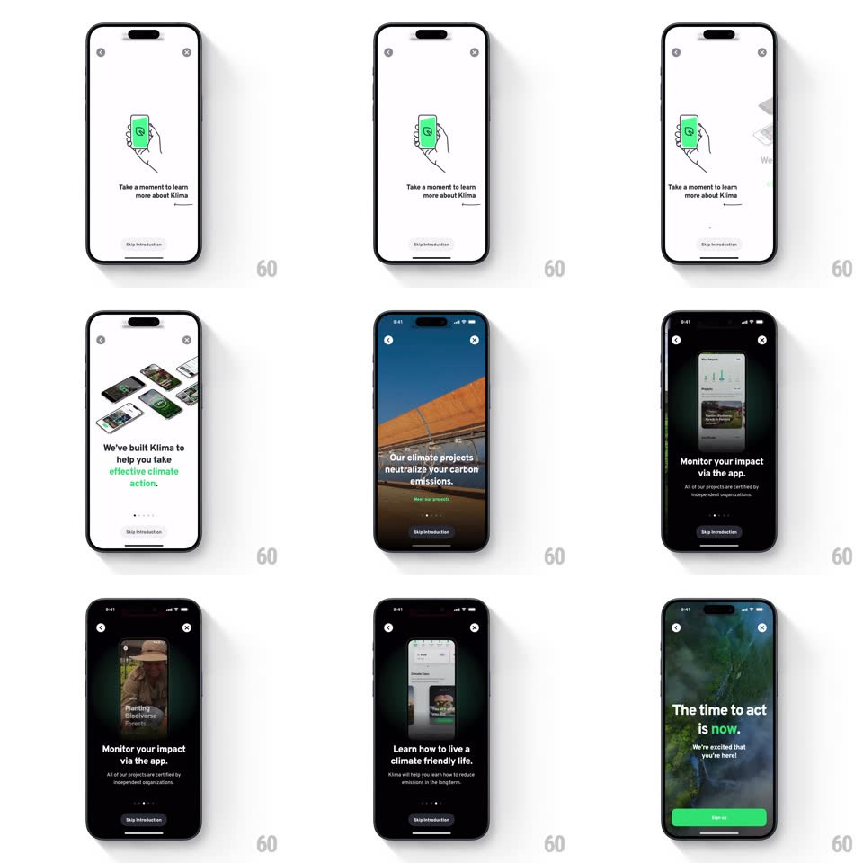

Media
Frame-by-frame

Rebuild this interaction 1:1: Klima's intro carousel - swipe through cards that alternate between white illustration pages ("Take a moment to learn more about Klima", tilted phone mockups) and full-bleed dark video pages ("Our climate projects neutralize your carbon emissions", "The time to act is now").

Rebuild this interaction 1:1: Klima's intro carousel - swipe through cards that alternate between white illustration pages ("Take a moment to learn more about Klima", tilted phone mockups) and full-bleed dark video pages ("Our climate projects neutralize your carbon emissions", "The time to act is now").
## Integration
Integration: stack-agnostic spec - springs given as stiffness/damping, timed motions as duration + curve; map every value to your framework and animation library of choice.
## Scene
Card 1: white, a line-art hand holding a green-screen phone. Card 2: white, a fan of tilted phone mockups showing the app, "We've built Klima to help you take effective climate action" with green accent words. Cards 3+: dark full-bleed project videos with white overlay copy. Back arrow + close X top corners, page dots, "Skip introduction" pill bottom.
## Motion spec
Pattern: horizontal swipe carousel with mixed media pages.
- Swipe: pages track the finger 1:1; the incoming page reveals with a slight parallax - its content (mockups, copy) moves ~10% slower than the page edge.
- Release: snaps to the nearest page (spring ~320/26, ~300ms); page dots slide their fill to match (200ms).
- On white pages: the phone mockups drift subtly (translate +-6px on a 4s loop); on dark pages the video plays immediately as the page becomes >=50% visible.
- The green accent words in headlines tint in word-by-word (stagger 80ms) when the page settles.
- The background flips white <-> black with the page (crossfade 250ms) - status bar and dots re-tint to match.
## Calibration
- Mockup fans are 3D-tilted, layered with soft shadows - they float above the page, not flat on it.
- Video pages dim their footage ~30% so white copy always reads.
## Reduced motion
Pages snap without parallax; videos show poster frames.
## Don't miss
- The carousel alternates light/dark pages - the flip is part of the rhythm.
- "Skip introduction" persists on every page, same pill, same spot.